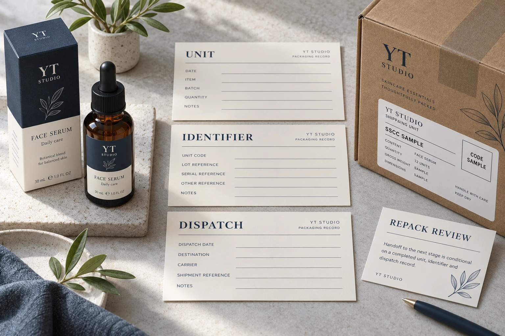

Two pallets can contain the same cosmetic products and still need different logistics identities. An SSCC identifies an individual logistics unit, rather than the product design inside it. Before ordering shipment labels, agree what physical unit receives the identity and which dispatch record follows it.
That is the purchasing decision this guide addresses. It assumes a trading partner has requested an SSCC arrangement; it does not say every cosmetic shipment requires one. The warehouse, product-data owner and receiving partner must settle the applicable requirements before a printer is asked to produce variable labels.
Start with the unit that will actually travel
GS1 Denmark's SSCC guidance explains that the identifier distinguishes individual logistics units such as pallets and parcels, including separate units with identical contents. It also describes representing the identifier through GS1-128 with Application Identifier 00. Use the applicable GS1 and partner specifications for the complete implementation; this article does not provide a substitute number-generation rule.
Walk through the proposed dispatch with the warehouse owner. Is the receiving partner expecting a pallet identity, a parcel identity or an agreed hierarchy? At what point is that unit assembled and known? Who can confirm that the printed label belongs to that unit rather than a nearby one?
A retail product GTIN, an individual-item serial reference and an SSCC serve different identification tasks. Keep them in separate fields in the handoff. Our item serial-number guide covers allocation at another level. Do not solve a logistics-unit requirement by recycling a retail code merely because both appear in barcodes.
Allocation belongs to an identified system owner
Ask which authorized party assigns the SSCC and which system or controlled process records it. A label converter can receive an approved dataset or discuss an agreed production scope, but an attractive sample layout does not establish ownership of a number range.
The release record should identify the unit, assigned identifier, intended recipient, relevant content reference and current status. Keep the actual data format and partner message requirements with the responsible logistics or integration specialist. Procurement should not invent an allocation spreadsheet and assume that its number sequence is legitimate.
Also ask what happens when printing is interrupted. A replacement physical label for the same unit and an identifier allocated to a newly assembled unit are different events. Have the owner describe the permitted procedure and how superseded or unused labels are controlled. A general instruction to print another copy leaves those events ambiguous.
Build a unit-to-dispatch reconciliation sheet
Use this editorial record to expose gaps between the physical shipment and its information. It does not certify a GS1 implementation.
| Control point | Required input | Release question |
|---|---|---|
| Unit creation | Defined pallet, parcel or partner-agreed unit | Which physical object is being identified? |
| Identifier allocation | Authorized source and assigned SSCC record | Can the owner account for this identifier? |
| Label production | Approved layout, data revision and copy handling | Which labels belong to that unit? |
| Dispatch connection | Agreed contents and shipping/message reference | Does the information describe the actual unit leaving? |
| Change or rework | Recorded split, merge, replacement or cancellation | Does the identification need an owner-approved change? |
| Receiving check | Partner requirements and named acknowledgement | Is the intended receiving workflow represented? |
Complete the unit definition and allocation ownership first. Then compare one representative dispatch record with the corresponding physical unit and label. Have the specialist check the encoded data and the receiving interface. Keep the evidence tied to the same example throughout; three unrelated screenshots do not demonstrate one complete handoff.
Finally define the event that permits production and dispatch. Record any incomplete partner requirement as pending. A supplier's printed proof can support layout approval while the data connection remains open. Those statuses should not collapse into a single approved stamp.

Repacking is a reason to revisit the record
Consider a hypothetical intact pallet moving from assembly to dispatch without a change in its defined unit. The owner can reconcile its identity against the agreed records and proceed under the partner's procedure.
Now imagine that the shipment is split into separate dispatch units or rebuilt before it leaves. Do not assume the original label still describes each new object. Ask the allocation and warehouse owners to determine the applicable identification and message changes. Record the disposition of obsolete labels so a previously plausible identifier does not remain attached to the wrong shipment.
These examples illustrate control questions, not universal rules for every repacking event. The partner agreement and applicable GS1 requirements govern the actual treatment. Keep that determination with the competent owner rather than copying a number from a photograph.
Treat readability and identity as separate evidence
A scanner reading characters shows something useful about that capture. It does not prove the identifier was legitimately assigned, uniquely associated with this unit or connected to the right dispatch information. Conversely, a correct allocation record does not establish the printed symbol's physical quality.
Commission the necessary checks for both questions. The barcode verification report guide addresses the print-report discussion. The shipping-carton label guide addresses case-level information and handling context. Neither should be treated as a substitute for logistics allocation control.
Hold the affected release if nobody owns allocation, the unit-to-record association cannot be demonstrated or repacking has left the previous label disposition unresolved. If only layout is being quoted, state that limitation plainly; there is no need to imply that the printer operates the warehouse integration.
For a label quotation discussion, provide the physical unit, application surface, label dimensions, quantities, approved variable-data arrangement and receiving partner's specification. Identify the allocation owner and remaining acceptance question. The form prepares a message; share layouts and records separately by email or WhatsApp. Request the printing scope that fits the actual logistics handoff.